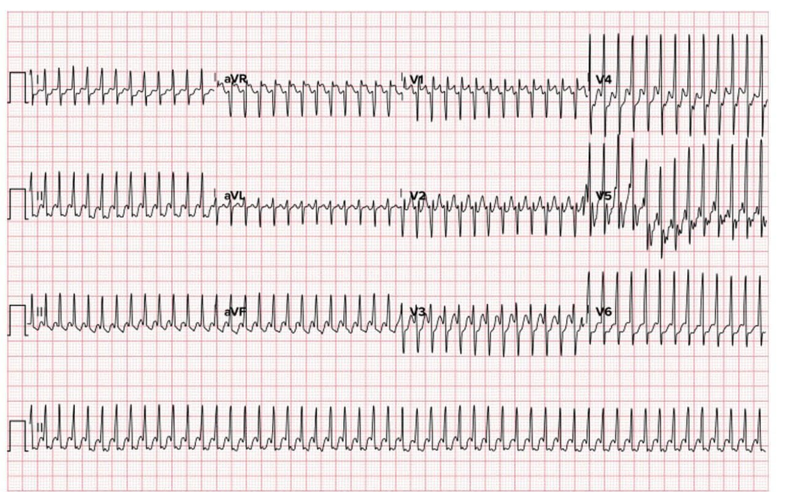
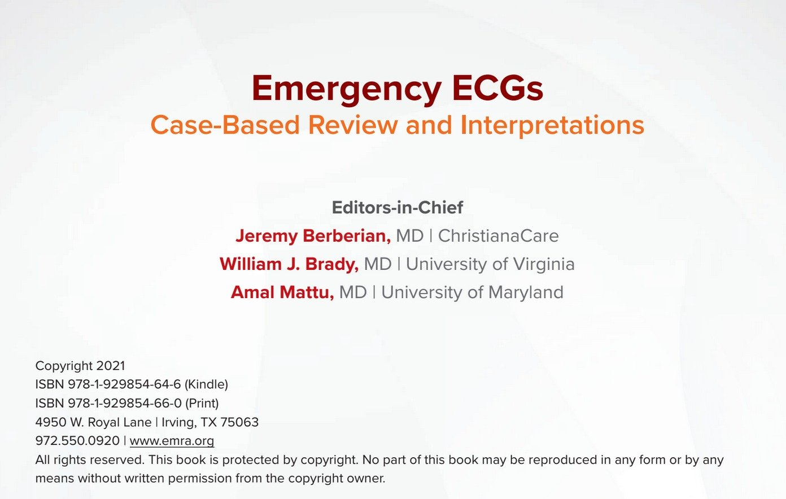
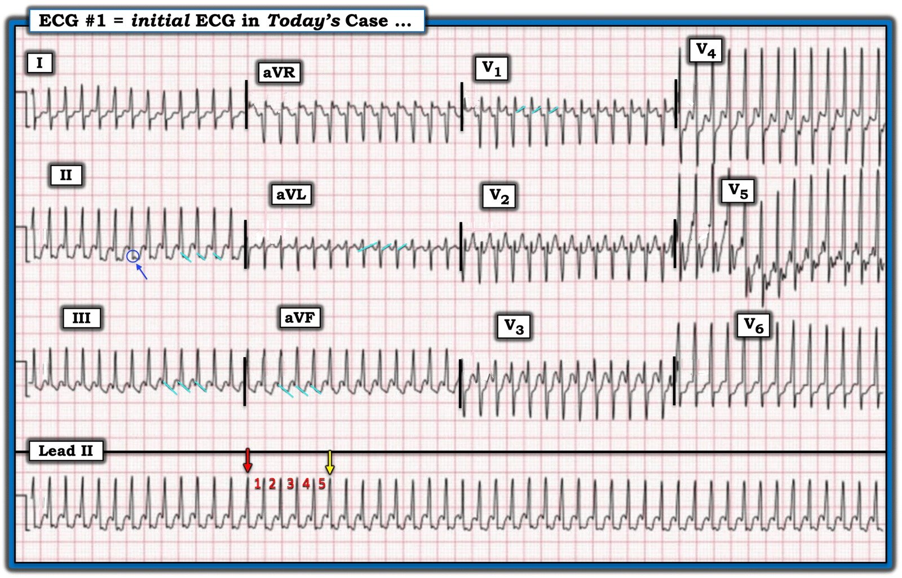

08/10/2025 — Cực kỳ nhanh, QRS hẹp, đều
Bản dịch tiếng Việt của bài "Extremely fast, narrow, regular" – Dr. Smith’s ECG Blog. Giữ nguyên toàn bộ 3 hình ảnh của bản gốc.


Một độc giả đã gửi email cho tôi điện tâm đồ này kèm thông tin sau: nam 39 tuổi, không có tiền sử bệnh lý, đến khám vì hồi hộp đánh trống ngực 3 ngày và 2 cơn ngất trong 8 giờ qua.
(Sau đó tôi được một nhà xuất bản cho biết điện tâm đồ này lấy từ sách của họ và có bản quyền. Người gửi đã giới thiệu điện tâm đồ này là của cơ sở nơi cô ấy làm việc, và đã cho phép sử dụng. Nhà xuất bản đồng ý để tôi giữ nó ở đây kèm ghi nguồn. Tôi nghĩ người gửi thật sự tin rằng nó đến từ một đồng nghiệp ở chính cơ sở của cô. Một nhầm lẫn không cố ý.)
Điện tâm đồ này lấy từ cuốn sách này, nay đã được phép sử dụng:



Đây là gì, và tôi đã trả lời ra sao?
Câu trả lời của tôi: “Cuồng nhĩ dẫn truyền 1:1. Nút AV này dẫn truyền quá nhanh. Có lẽ do cường giáp.” Bạn có thể thấy sóng cuồng nhĩ với tần số trên 300 một chút, và tần số thất tương ứng cũng trên 100 một chút.
Đáp án của ca bệnh: Kết quả thăm khám tại khoa cấp cứu (ED) của bệnh nhân này phù hợp với cơn bão giáp. Bệnh nhân được chuyển nhịp bằng thuốc với adenosine, sau đó
chuyển thoáng qua sang nhịp nhanh xoang rồi vào rung nhĩ đáp ứng thất nhanh (RVR) ~140 lần/phút. Rung nhĩ thường gặp trong cơn bão giáp và thường kháng trị với kiểm soát tần số hay chuyển nhịp cho tới khi tình trạng tăng hormon tuyến giáp được điều trị.
Vậy đây là AVNRT cực nhanh, AVRT, hay cuồng nhĩ dẫn truyền 1:1? Có thể chúng ta sẽ không bao giờ biết. Việc chuyển nhịp sau adenosine chắc chắn khiến người ta tin rằng đây là AVNRT hoặc AVRT xuôi chiều, nhưng dường như vẫn có sóng cuồng nhĩ. Tôi nghĩ AVNRT hoặc AVRT là khả năng cao nhất. Dù thế nào đi nữa, nút AV đang hoạt động RẤT nhanh.
Điểm cần học: K. Wang, tác giả của cuốn EKG Atlas tuyệt vời (dưới đây), nhiều năm trước đã nói với tôi rằng cách duy nhất để một nút AV có thể dẫn truyền với tần số tăng cao như thế này là bệnh nhân bị cường giáp, gây ra trương lực giao cảm rất cao.
Y văn về vấn đề này rất ít. Các nguyên nhân khác gây tăng vọt catecholamine cực độ cũng có thể (về lý thuyết) gây ra điều này, bao gồm thuốc cường giao cảm, u tủy thượng thận (pheochromocytoma), v.v.
Mặc dù dẫn truyền nhanh như vậy có thể gặp khi có đường phụ, nhưng khi đó phức bộ sẽ không hẹp như thế này.
Điều trị ở đây là rõ ràng: sốc điện chuyển nhịp.
Phiên bản trực tuyến cuốn Atlas của Dr. Wang (miễn phí)
Hoặc mua cuốn Atlas của Dr. Wang tại đây
Xem các ca cuồng nhĩ dẫn truyền 1:1 khác. Nhưng tất cả các ca đó đều có tần số nhĩ chậm hơn nhiều, thường do thuốc chống loạn nhịp nhóm 1 (thường là 1c), như flecainide.
A young woman with palpitations. What med is she on? With what medication is she non-compliant? What management?
(Một phụ nữ trẻ hồi hộp đánh trống ngực. Cô ấy đang dùng thuốc gì? Cô ấy không tuân thủ thuốc nào? Xử trí thế nào?)
Challenging Rhythms in an 80-something Man
(Những nhịp tim khó ở một người đàn ông ngoài 80 tuổi)
Narrow Complex Tachycardia at a Rate of 220
(Nhịp nhanh QRS hẹp với tần số 220)
Wide-complex tachycardia that didn’t follow the rules
(Nhịp nhanh QRS rộng không tuân theo quy tắc)
Và còn nhiều nữa
= = =
======================================
BÌNH LUẬN CỦA TÔI, bởi KEN GRAUER, MD (Lưu ý rằng dù lần đầu tôi đăng Bình luận này ngày 7/10 — tôi đã sửa lại vào ngày 8/10/2025):
Giống như câu trả lời ban đầu của Dr. Smith — tôi cũng nghĩ điện tâm đồ hôm nay (mà tôi đã tái hiện trong Hình 1) gợi ý ngay một đáp án duy nhất = AFlutter (cuồng nhĩ) với dẫn truyền AV 1:1. Dù vậy, vào chẩn đoán phân biệt — tôi buộc phải thêm AVRT (nhịp nhanh vào lại nhĩ thất), trong đó một AP (đường phụ) tham gia vào vòng vào lại — vì cả thể xuôi chiều lẫn thể ngược chiều của AVRT trong những trường hợp hiếm có thể đạt tần số SVT nhanh đến mức này.
- Nhịp trong Hình 1 — là một nhịp nhanh QRS hẹp, đều, cực kỳ nhanh, không có dấu hiệu rõ ràng của hoạt động nhĩ. Mặc dù dường như có gợi ý một khía ở ngay cuối phức bộ QRS tại chuyển đạo II (trong vòng tròn XANH DƯƠNG) — không thấy khía như vậy ở các chuyển đạo thành dưới còn lại, trong khi thường sẽ thấy khi có dẫn truyền nhĩ ngược dòng từ một nhịp SVT vào lại.
- Việc dấu hiệu hoạt động nhĩ không chắc chắn trong Hình 1 không có gì đáng ngạc nhiên — vì tần số tim quá nhanh (tức là, Đơn giản là không còn mấy chỗ để đặt sóng P khi khoảng R-R đã bị phức bộ QRS và sóng ST-T chiếm trọn). Gần giống như một hình ảnh mơ hồ — sau khi nhìn bản ghi này nhiều lần, tôi đã tự hỏi về sóng cuồng nhĩ 1:1 ( = các đường nghiêng màu XANH DƯƠNG nhạt ở chuyển đạo II,III,aVF; aVL; V1). Cuối cùng tôi kết luận rằng hoạt động nhĩ là không chắc chắn.
- Điểm MẤU CHỐT: Tần số tim trong bản ghi hôm nay là trên 300 lần/phút! Lưu ý ở Hình 1 bên dưới rằng tôi đã đặt một mũi tên ĐỎ đúng vào một sóng R rơi trên một đường kẻ đậm. Năm ô lớn sau đó — ta thấy phức bộ QRS thứ 5 xuất hiện hơi trước đường kẻ đậm thứ 5 (mũi tên VÀNG đánh dấu sóng R của phức bộ QRS thứ 5 — xuất hiện trước đường kẻ đậm thứ 5). Điều này cho ta biết khoảng R-R hơi ngắn hơn 1 ô lớn — nghĩa là tần số tim là trên 300 lần/phút!
- Xin nhấn mạnh — AFlutter dẫn truyền AV 1:1 là hiếm gặp! Dù vậy, đặc biệt khi AFlutter 1:1 biểu hiện với tần số thất nhanh như ta thấy ở Hình 1 — đây là một cấp cứu nội khoa cần sốc điện chuyển nhịp đồng bộ ngay lập tức.
- Cũng xin nhấn mạnh — AVRT thường không nhanh như nhịp trong Hình 1. Dù vậy — trong những trường hợp hiếm, nó có thể đạt tần số ~300 lần/phút (và lên tới ~320 lần/phút ở nhũ nhi và trẻ nhỏ) — đặc biệt nếu đang có những tình trạng làm tăng trương lực giao cảm cực độ.
- ĐIỀU CỐT LÕI: Tôi nghi ngờ nhịp trong Hình 1 là AFlutter dẫn truyền AV 1:1. Dù vậy — tôi không thể loại trừ một AVRT nhanh bất thường.
= = =
Hình 1: Tôi đã tái hiện điện tâm đồ hôm nay để cho thấy khoảng R-R hơi ngắn hơn 1 ô lớn — nghĩa là tần số tim trên 300 lần/phút!


= = =
Tôi nghiêng về cuồng nhĩ ở Hình 1 …
Theo kinh nghiệm của tôi — nhịp có khả năng cao nhất tạo ra một SVT đều (nhịp nhanh trên thất) ở người lớn với tần số ≥300 lần/phút là AFlutter với dẫn truyền AV 1:1.
- Khoảng tần số cuồng nhĩ thường gặp ở người lớn bị AFlutter chưa điều trị là từ 250-350 lần/phút (thường gặp nhất là rất gần 300 lần/phút). Do chức năng “bảo vệ” vốn có của nút AV — dẫn truyền AV 1:1 là hiếm gặp. Do đó, cho đến nay — đáp ứng thường gặp nhất của nút AV là chỉ cho 1 trong mỗi 2 xung cuồng nhĩ dẫn truyền qua nút AV. Điều này giải thích vì sao tần số thất thường gặp trong AFlutter chưa điều trị là gần 150 lần/phút (300 ÷2 = 150 lần/phút) — với khoảng tần số thất thường gặp ở bệnh nhân đến khám vì AFlutter chưa điều trị là khoảng ~130-170 lần/phút.
- LƯU Ý: Đáng tiếc là tôi không có thông tin diễn tiến cụ thể về kết cục của ca này — và vì vậy không có câu trả lời chắc chắn rằng căn nguyên của nhịp trong Hình 1 là AFlutter với dẫn truyền AV 1:1 (như tôi nghi ngờ) — hay một AVRT cực kỳ nhanh. Các bình luận của tôi dưới đây dựa trên linh cảm rằng nhịp này là AFlutter 1:1.
= = =
Khi nào bạn có thể gặp AFlutter dẫn truyền AV 1:1?
Như đã nói ở trên — AFlutter dẫn truyền AV 1:1 là hiếm gặp. Dù vậy — nó có thể xảy ra — và khi xảy ra, hầu như luôn đi kèm một hoặc nhiều hoàn cảnh sau (Xem Murthy và cs. — BMJ Case Rep, 2013):
- Bệnh nhân đang dùng một loại thuốc chống loạn nhịp nào đó (thường gặp nhất là một thuốc nhóm IC như flecainide hoặc propafenone). Lý do là các thuốc này làm chậm tần số nhĩ của cuồng nhĩ — đến mức AFlutter với tần số nhĩ chẳng hạn 220 lần/phút (thay vì 300 lần/phút) có thể đủ chậm để nút AV dẫn truyền 1:1, trừ khi bệnh nhân cũng đang dùng thuốc ức chế nút AV.
- Điểm MẤU CHỐT: Mặc dù dùng thuốc nhóm 1C có lẽ là nguyên nhân thuận lợi thường gặp nhất gây dẫn truyền AV 1:1 trong AFlutter — do các thuốc này làm chậm tần số nhĩ của cuồng nhĩ, nên dẫn truyền AV 1:1 thường sẽ không biểu hiện bằng AFlutter 1:1 với tần số thất nhanh như ca hôm nay! Do đó — bệnh nhân đang dùng thuốc nhóm 1C có thể chịu đựng AFlutter 1:1 lâu hơn so với khi tần số cuồng nhĩ là 300 lần/phút.
Các tình trạng khác có thể tạo thuận lợi cho AFlutter 1:1:
- Bệnh nhân có thể có một AP (đường phụ) cho phép dẫn truyền xung nhĩ xuống thất nhanh hơn.
- Cường giáp đi kèm hoạt động giao cảm tăng rất mạnh, làm tăng cường dẫn truyền AV (như đã thấy ở ca hôm nay).
- Và, trong những trường hợp hiếm — gắng sức đã được báo cáo là gây dẫn truyền AV 1:1 trong AFlutter (do cả việc tăng độ dài chu kỳ của sóng cuồng nhĩ, lẫn việc tăng cường dẫn truyền AV do hoạt động giao cảm tăng). Và mặc dù riêng gắng sức khó là thủ phạm — khi kết hợp với thuốc chống loạn nhịp, đường phụ và/hoặc cường giáp, điều này có thể đủ để khởi phát AFlutter 1:1.
CẢNH BÁO #1: Mặc dù một hoặc nhiều yếu tố thuận lợi kể trên thường đi kèm những ca AFlutter 1:1 hiếm hoi thực sự xảy ra — một báo cáo ca bệnh của Murthy và cs. ( BMJ Case Rep, 2013 ) mô tả một người đàn ông 50 tuổi đến khám với AFlutter 1:1 ở tần số rất nhanh 280 lần/phút nhưng không có bất kỳ tình trạng thuận lợi nào.
- LƯU Ý: Mặc dù tôi có gặp thỉnh thoảng một số báo cáo ca bệnh khác về bệnh nhân biểu hiện AFlutter 1:1 — phần lớn là ở bệnh nhân đang dùng thuốc chống loạn nhịp nhóm I, trong đó tần số thất của AFlutter thường chậm hơn đáng kể so với tần số của bệnh nhân hôm nay.
= = =
CẢNH BÁO #2: Cần biết rằng khi tần số thất của AFlutter 1:1 rất nhanh — QRS có thể giãn rộng do dẫn truyền lệch hướng liên quan tần số. Snipes và cs. đã khảo sát 8 bệnh nhân không dùng thuốc chống loạn nhịp và không có tiền kích thích — đến khám với AFlutter 1:1 bị che giấu bởi QRS giãn rộng, điều dễ hiểu là đã dẫn đến chẩn đoán nhầm là VT ( J Innov Card Rhythm Manag 15(10):6041-6046, 2024 ).
- T.B. (P.S.): Có lẽ lý do nghiên cứu này của Snipes và cs. chỉ gồm 8 bệnh nhân — là vì AFlutter dẫn truyền AV 1:1 hiếm gặp, nên rất khó tìm bệnh nhân để đưa vào nghiên cứu … Dù vậy — “Điều cần nhớ” từ mẫu bệnh nhân nhỏ này là cần biết rằng AFlutter 1:1 kèm dẫn truyền lệch hướng liên quan tần số có thể giống VT (và có lẽ điều này xảy ra thường xuyên hơn chúng ta nghĩ).
Một cân nhắc cuối cùng trong ca hôm nay:
Bệnh nhân hôm nay là một nam giới 39 tuổi trước đó khỏe mạnh, đến khám vì hồi hộp đánh trống ngực 3 ngày, trong đó có 2 cơn ngất.
- Điều quan trọng là cần biết đến thực thể gọi là TCM (bệnh cơ tim do nhịp nhanh) — trong đó rối loạn chức năng thất trái có thể xuất hiện chỉ do tần số tim tăng kéo dài.
- Trong bài tổng quan của Huizar, Ellenbogen và cs. về chủ đề này ( JACC 73:2328-2344, 2019 ) — các tác giả nêu thời gian nhịp nhanh rất thay đổi ở những bệnh nhân sau đó tiến triển thành TCM, với thời gian ngắn chỉ 3 ngày cũng đủ dẫn đến suy giảm chức năng thất trái.
- “Tin tốt” — là nhiều (phần lớn) bệnh nhân TCM hồi phục chức năng thất trái khi nhịp nhanh được kiểm soát (thường trong vòng 1-3 tháng) — điều này chứng minh rằng tần số tim nhanh kéo dài thực sự là nguyên nhân gây bệnh cơ tim của bệnh nhân.
- Về bệnh nhân hôm nay, xét thời gian có triệu chứng trước khi đến khoa cấp cứu ( = 3 ngày hồi hộp đánh trống ngực, trong đó có 2 cơn ngất) — đánh giá chức năng thất trái sẽ là một phần thiết yếu của xử trí.
= = =
Những điểm cần học:
- Hiếm khi gặp một SVT đều (tức là, nhịp nhanh QRS hẹp) với tần số ≥280 lần/phút ở người lớn. Dù vậy, như ca hôm nay cho thấy — hiện tượng này có xảy ra, đặc biệt nếu có yếu tố thuận lợi cho tần số nhanh như vậy do cường giáp, đường phụ, hay trương lực giao cảm quá mức.
- Dấu hiệu rõ ràng của hoạt động nhĩ thường sẽ không thấy được trong các nhịp SVT nhanh đến mức này — và nếu có, thường cũng không đủ để chẩn đoán (như trong bản ghi hôm nay). Trong những trường hợp này — chẩn đoán nhịp nằm giữa AFlutter với dẫn truyền AV 1:1 và AVRT.
- Việc phân biệt AFlutter 1:1 với AVRT không quyết định đối với xử trí ban đầu — vì cả hai nhịp đều đáp ứng với sốc điện chuyển nhịp ngay lập tức, thường là lựa chọn điều trị ưu tiên.
- Adenosine được kỳ vọng sẽ chuyển nhịp AVRT — trong khi khó có khả năng chuyển nhịp AFlutter 1:1. Tuy nhiên, adenosine có thể làm chậm dẫn truyền xung qua nút AV trong AFlutter — gây giảm tần số tim thoáng qua, có thể giúp ích cho chẩn đoán nhờ bộc lộ sóng cuồng nhĩ bên dưới. Việc người điều trị có yên tâm tiêm Adenosine tĩnh mạch cho bệnh nhân đang trong nhịp SVT đều với tần số cực cao (tức là, >280 lần/phút) hay không là điều mà, “Phải có mặt ở đó mới biết”.
- Điều trị triệt để tùy thuộc vào việc có tìm được nguyên nhân điều trị được của nhịp này hay không (tức là, cường giáp) — và nếu không, chuyển đi thăm dò điện sinh lý (EP) và nhiều khả năng triệt đốt.
= = =
= = =